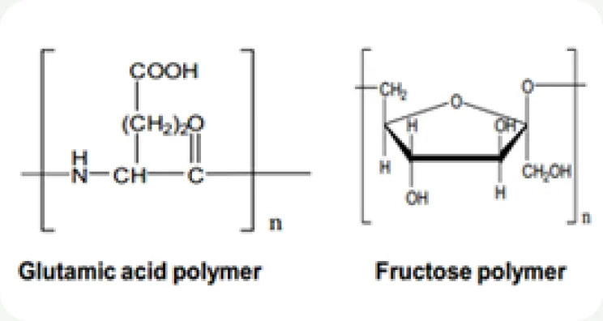
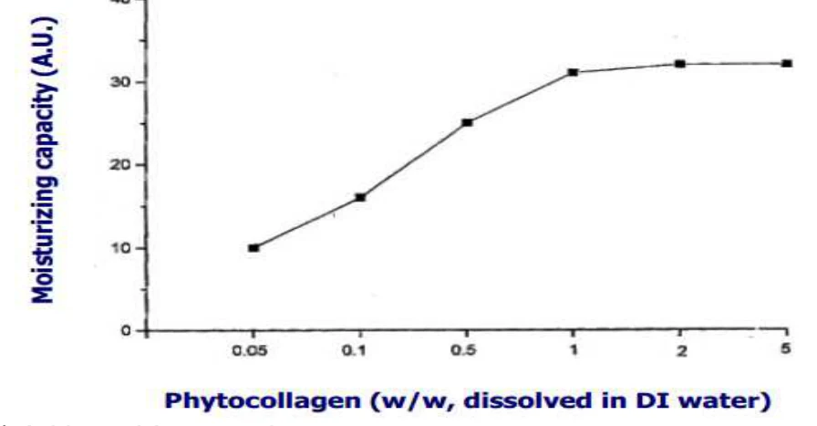
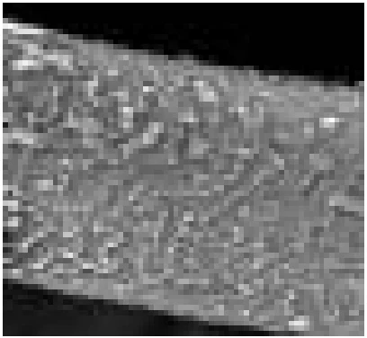
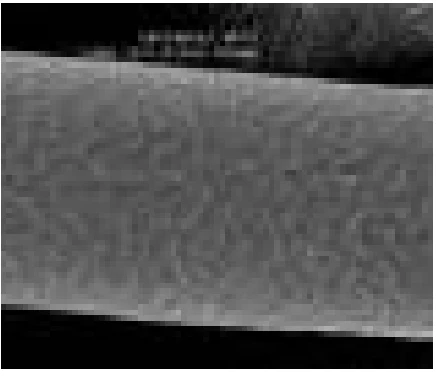
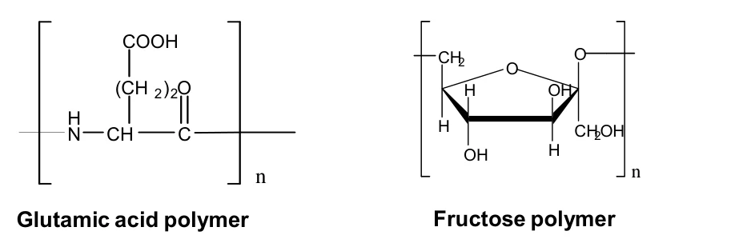

HOME
HOME- 원료소개
- 화장품원료
- Phytocollagen PF
Ingredient research
Phytocollagen PF
콩 발효 유래 보습 원료
01 / Overview & Strengths
개요 & 특장점
- 콩을 발효시켜 얻은 성분입니다.
- 피부 보습과 영양 공급에 매우 뛰어난 효과를 보이는 물질로, 피부에 부드럽게 발리며 은은한 윤기를 이끌어 내주는 제품입니다.
※ 자세한 자료는 직접 문의 부탁드립니다.
Product features / Product Strengths
- 모발 영양공급 효과
- 모발보호 효과
- 보습 효과

02 / Technical Information
기술 자료
원료 기본 규격 및 제품 카탈로그
- INCI Name
- Water/Butylene glycol/Natto gum
- CAS No.
- 9079-02-01
- M.O.Q.
- 1KG
- Pack Size
- 1/5/10/20KG
- Appearance
- Liquid
- Dosage
- 1~30%
03 / Research Data
기타 데이터
Introduction
- Phytocollagen PF는 Bacillus sp. 균주로 대두를 발효해 얻은 원료(fermented soybean derived product)입니다. 동아시아 전통 콩 발효 식품의 제조 방식에서 착안했습니다.
- 보습과 영양 공급(moisturizing and nourishing) 효과가 뛰어나며, 매끄럽게 발리고 잘 퍼지는(lubricating and spreading) 사용감을 줍니다.

Phytocollagen 농도(w/w, 정제수 용해)에 따른 보습력 변화 · A.U. : 임의 단위, Corneometer 측정
Before
→3 times

After

손상(탈색) 모발에 대한 보습 · 영양 효과 : 처리 전과 3회 적용 후 비교

Components
주요 구성 성분
아미노산 고분자(γ-폴리글루탐산, 분자량 100,000~1,000,000)와 과당 고분자(Fructose polymer)로 이루어져 있습니다.
Application to cosmetic
| 적용 분야 | 제형 | 사용량 (Dosage) |
|---|---|---|
| Skin Care | Lotion | 0.01 - 10.0 % |
| Cream | 0.01 - 10.0 % | |
| Skin Lotion | 0.01 - 10.0 % | |
| Make-up | Foundation, Make-up Base | 0.01 - 5.0 % |
- 파라벤 프리 타입 공급 가능 (Paraben free type available)
- 무보존제 타입 공급 가능 (Non-preservative type available)
원료 품질 시험 항목 및 기준
- Appearance
- Colorless to light brown liquid, Transparent
- Odor
- Slightly characteristic odor
- pH
- 6.0 ~ 7.0
- Solid Content
- 0.5 ~ 0.8% (w/w)
- Heavy metals
- Max. 20 ppm
- Arsenic
- Max. 2 ppm
- Microbial count
- <100 cfu/g